UE24CS352A Machine Learning Hackathon, Technical Report. Team CS516 · CS517 · CS525 · CS526
Partitions used: all EDA uses the 80 training and 10 student-testing trips. The 10 evaluator trips were not available to us and are never read by any analysis or training script.
Each trip is a folder with four header-less, whitespace-separated files:
.track: GPS fixes as longitude, latitude, time (s)..nodes: road-network nodes as longitude, latitude. The row number is the node id..arcs: directed road segments as from_node, to_node. The row number is the arc id..route: the chronological list of arc ids the vehicle travelled (the reference).The files are linked only through ids. A route row points to an arc row, and an arc row points to two node rows. A GPS row does not correspond to any network row. The route also says nothing about which fix lies on which arc, so per-fix labels have to be derived (§2.2). Each trip has its own road network, and network size varies enormously: from 649 to 307,392 arcs (median 18,761). Arcs are directed: for 92% of arcs the opposite-direction arc also exists, so two-way streets appear as two arcs. The reference routes are continuous chains (the head of one arc is the tail of the next) except in 11 trips with 14 breaks in total.
| partition | trips | gps_points | median_fixes | median_arcs | max_gap_s | missing_values |
|---|---|---|---|---|---|---|
| student_test | 10 | 19160 | 1420.0 | 13145.0 | 210.0 | 0 |
| train | 80 | 208417 | 1529.0 | 19526.5 | 153064.0 | 0 |
| eval_test | 10 | withheld | - | - | - | - |
.route gives arcs in order but no timing. We align fixes to the route
with a monotone dynamic program: we choose a non-decreasing route index j(i) for each fix i that minimises the sum of
fix-to-arc distances. Arcs may be skipped, because a short arc can be crossed between two 1 Hz fixes. Fixes more than
50 m from their aligned arc are marked unreliable: 11.2% of training fixes and
0.1% of student-test fixes. They occur where the reference route does not cover part of the GPS
track (two training trips are mostly uncovered). Unreliable fixes are excluded from training and from the headline
accuracy. Accuracy over all labelled fixes is also reported.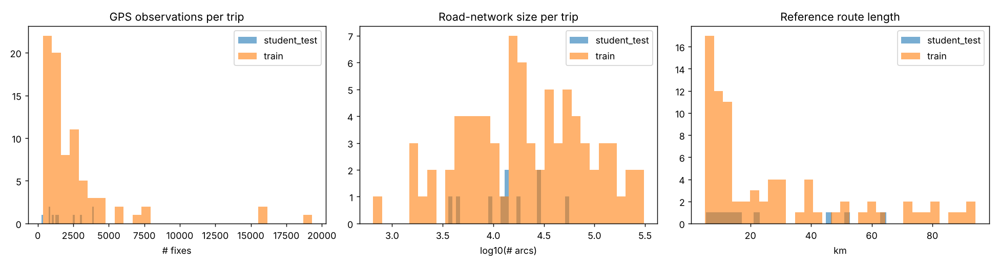
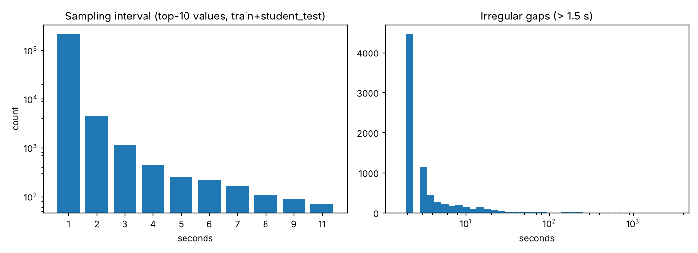
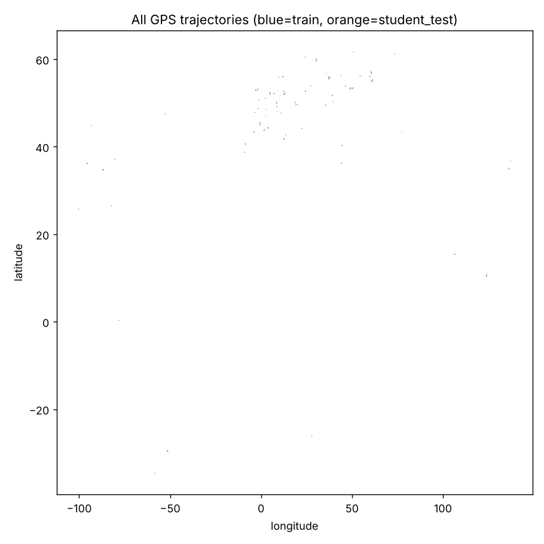
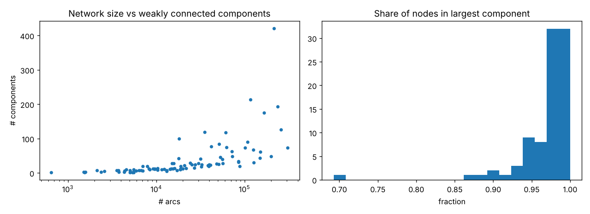
No trip has missing or non-numeric values: the total count of missing values is 0, and timestamps never decrease (0 cases). The data-quality issues are instead GPS gaps, occasional large jumps (largest 888 m between consecutive fixes), uncovered stretches of reference route and a few route discontinuities.
| trip_id | partition | n_gps | max_gap_s | n_gaps_gt_10s | max_jump_m | route_discontinuities |
|---|---|---|---|---|---|---|
| 00000002 | train | 7243 | 160.0 | 41 | 37 | 1 |
| 00000004 | train | 1064 | 51.0 | 215 | 139 | 0 |
| 00000006 | train | 1450 | 301.0 | 5 | 47 | 0 |
| 00000011 | train | 2828 | 909.0 | 1 | 50 | 0 |
| 00000014 | train | 448 | 72.0 | 5 | 91 | 0 |
| 00000019 | train | 2354 | 1.0 | 0 | 55 | 3 |
| 00000021 | train | 15783 | 2161.0 | 2 | 46 | 0 |
| 00000022 | train | 474 | 22.0 | 9 | 253 | 0 |
| 00000024 | train | 801 | 458.0 | 2 | 66 | 0 |
| 00000026 | train | 361 | 17.0 | 23 | 220 | 0 |
| 00000028 | train | 3565 | 196.0 | 6 | 68 | 0 |
| 00000032 | train | 2464 | 41.0 | 7 | 178 | 0 |
| 00000033 | train | 5844 | 3.0 | 0 | 142 | 1 |
| 00000037 | train | 677 | 52.0 | 8 | 32 | 0 |
| 00000041 | train | 1019 | 89.0 | 1 | 41 | 1 |
First 15 of 40 flagged trips (gap > 30 s, route discontinuity or jump > 200 m). Full list: results/eda/anomalies.csv.
Each candidate row (fix i, arc a) has 19 features. Each group addresses a confusion we saw in the EDA.
| Group | Features | Why |
|---|---|---|
| Geometry | dist, dist_rank, dist_minus_min, dist_ratio, n_cands | Closeness alone is the classic emission. The relative versions make it comparable across dense and sparse areas. |
| Direction | heading_diff, heading_valid, heading_x_valid | Separates the two directions of a two-way street and parallel roads. Masked when the vehicle is stationary. |
| Arc | frac (position along the arc), arc_len | Projections clamped at arc ends often mean the fix belongs to the next arc. |
| Motion | speed, dt_prev, dt_next | GPS noise and gap context. Slow vehicles have unreliable headings. |
| Temporal context | dist_prev, dist_next, dist_win_mean (±2 fixes) | A true arc stays close to neighbouring fixes, while a crossing street is close for only one fix. |
| Connectivity | near_prev_top1, conn_prev_top1, conn_next_top1 | Whether the arc is the same as, or connected to, the nearest arc of the previous and next fix. These are label-free network cues. |
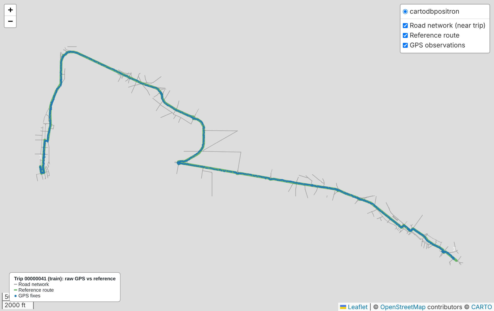
Learning task. Binary classification of candidate rows (label 1 if the arc is the fix's reference arc). Per fix, the arg-max of the predicted probability gives the classifier-only prediction. The probabilities also become the HMM emissions.
Protocol. We use 5-fold GroupKFold on the 80 training trips, with groups = trips, so no trip appears in
both training and validation. The final fit uses all 80 training trips, and evaluation uses the 10 student-testing trips.
Preprocessing and features are identical for every model. The seed is 42 throughout. Models that are expensive in the
number of rows (KNN, linear SVM, MLP) are fitted on a random row subsample, and the subsample size is recorded in the
configuration.
Primary metric. Observation-level Top-1 accuracy on reliable fixes. The system's output is one road segment per fix, so this is the quantity the evaluators measure. Macro F1 on candidate rows (threshold 0.5) is reported for classification quality. Log loss measures probability quality, which matters because the HMM consumes probabilities. All per-model logs are in results/experiments/*.json, the fold-level results in results/cv_folds.csv and the training console log in results/train_compare.log.
| model | family | config | cv_macro_f1_mean | st_top1_acc | st_route_continuity | st_macro_f1 | st_log_loss | inference_us_per_candidate |
|---|---|---|---|---|---|---|---|---|
| LightGBM | Boosting | 400 trees, lr=0.05, 63 leaves, bagging 0.8/0.8 | 0.9265 | 89.35% | 98.45% | 0.9339 | 0.0861 | 5.02 µs/cand |
| DecisionTree | Tree-based | max_depth=12, min_samples_leaf=50 | 0.9209 | 88.89% | 98.10% | 0.9280 | 0.0980 | 0.09 µs/cand |
| RandomForest | Ensemble (bagging) | 200 trees, max_depth=18, min_samples_leaf=20 | 0.9252 | 88.84% | 98.35% | 0.9308 | 0.0887 | 4.25 µs/cand |
| HistGradientBoosting | Boosting | 300 iters, lr=0.08, 31 leaves | 0.9252 | 88.43% | 98.43% | 0.9289 | 0.0948 | 1.09 µs/cand |
| MLP | Neural network | StandardScaler + MLP 64-32 ReLU, Adam lr=1e-3, early stopping, 300k-row subsample | 0.9197 | 87.87% | 98.60% | 0.9240 | 0.0992 | 0.19 µs/cand |
| ExtraTrees | Ensemble (bagging) | 200 trees, max_depth=18, min_samples_leaf=20 | 0.9183 | 87.60% | 98.23% | 0.9215 | 0.1095 | 4.24 µs/cand |
| KNN | Instance-based | StandardScaler + distance-weighted KNN, k=25, fit on 60k-row subsample | 0.9095 | 86.80% | 98.14% | 0.9159 | 0.1432 | 46.47 µs/cand |
| LogisticRegression | Linear / probabilistic | StandardScaler + L2 logistic regression, C=1.0, lbfgs | 0.9019 | 86.73% | 97.77% | 0.9064 | 0.1398 | 0.14 µs/cand |
| LinearSVM | Kernel-based | StandardScaler + LinearSVC C=0.5, Platt-calibrated (3-fold), 150k-row subsample | 0.9009 | 86.70% | 97.64% | 0.9055 | 0.1410 | 0.28 µs/cand |
| GaussianNB | Linear / probabilistic | Gaussian NB, var_smoothing=1e-9 | 0.8147 | 82.46% | 97.71% | 0.8017 | 0.8879 | 0.15 µs/cand |
Columns: CV macro F1 = mean over 5 GroupKFold folds of the 80 training trips. Top-1 = observation-level Top-1 accuracy on student-test fixes with a reliable label (classifier only, no HMM). Route continuity = share of consecutive fixes whose predicted arcs are the same, adjacent or joined by ≤100 m of road. Macro F1 and log loss are on candidate rows. Inference time is per candidate row. For reference, always picking the nearest arc gives Top-1 = 54.81%.
| model | cv_macro_f1_std | cv_top1_mean | cv_train_macro_f1_mean | st_accuracy | st_precision | st_recall | st_f1 | st_route_continuity_strict | st_route_f1 | train_time_s | n_train_rows |
|---|---|---|---|---|---|---|---|---|---|---|---|
| LightGBM | 0.0157 | 0.8804 | 0.9513 | 0.9647 | 0.8953 | 0.8822 | 0.8887 | 0.9508 | 0.9416 | 11.1 s | 1121462 |
| DecisionTree | 0.0160 | 0.8735 | 0.9349 | 0.9618 | 0.8888 | 0.8690 | 0.8788 | 0.9438 | 0.9372 | 17.0 s | 1121462 |
| RandomForest | 0.0155 | 0.8792 | 0.9419 | 0.9634 | 0.9009 | 0.8661 | 0.8832 | 0.9488 | 0.9393 | 159.3 s | 1121462 |
| HistGradientBoosting | 0.0151 | 0.8795 | 0.9374 | 0.9620 | 0.8835 | 0.8774 | 0.8804 | 0.9502 | 0.9354 | 6.2 s | 1121462 |
| MLP | 0.0154 | 0.8751 | 0.9275 | 0.9600 | 0.8934 | 0.8511 | 0.8717 | 0.9537 | 0.9392 | 11.4 s | 300000 |
| ExtraTrees | 0.0169 | 0.8742 | 0.9240 | 0.9590 | 0.8986 | 0.8377 | 0.8671 | 0.9479 | 0.9316 | 30.0 s | 1121462 |
| KNN | 0.0169 | 0.8642 | 0.9232 | 0.9556 | 0.8763 | 0.8406 | 0.8581 | 0.9435 | 0.9254 | 0.0 s | 60000 |
| LogisticRegression | 0.0200 | 0.8676 | 0.9050 | 0.9498 | 0.8426 | 0.8429 | 0.8427 | 0.9354 | 0.9231 | 2.5 s | 1121462 |
| LinearSVM | 0.0203 | 0.8681 | 0.9040 | 0.9492 | 0.8390 | 0.8435 | 0.8412 | 0.9332 | 0.9230 | 1.8 s | 150000 |
| GaussianNB | 0.0195 | 0.8295 | 0.8129 | 0.8659 | 0.5470 | 0.9299 | 0.6888 | 0.9417 | 0.8867 | 0.3 s | 1121462 |
Additional metrics. Precision, recall and F1 are for the positive class ("this candidate is the reference arc"). Strict continuity counts only identical or directly adjacent arcs.
A. Why suitable: Leaf-wise gradient boosting is state of the art for tabular ranking-like problems with many rows and a few dozen features.
Strengths and limitations: High accuracy, fast inference and good probabilities. However, it has many interacting hyperparameters and can overfit with large leaf counts, which motivated the Bayesian search.
B. Configuration: 400 trees, lr=0.05, 63 leaves, bagging 0.8/0.8. Loss / objective: Binary log loss, gradient boosting (leaf-wise growth, bagging).
C. Results: CV macro F1 0.9265 ± 0.0157, CV Top-1 88.04%.
Student test: Top-1 89.35%, macro F1 0.9339, log loss 0.0861,
precision 0.8953, recall 0.8822, route continuity 98.45%.
Training 11.1 s on 1,121,462 rows, inference 5.02 µs per candidate.
No strong over- or underfitting. Training macro F1 0.9513 vs validation 0.9265 (gap +0.025), with fold standard deviation 0.0157. The validation spread across folds mostly reflects which trips land in a fold (trips 33 and 54 have long uncovered stretches).
A. Why suitable: Rules such as 'close and heading-aligned' match how a person would snap a point.
Strengths and limitations: Interpretable and handles interactions and unscaled features. A single tree has high variance and produces piecewise-constant probabilities.
B. Configuration: max_depth=12, min_samples_leaf=50. Loss / objective: Gini impurity reduction (greedy).
C. Results: CV macro F1 0.9209 ± 0.0160, CV Top-1 87.35%.
Student test: Top-1 88.89%, macro F1 0.9280, log loss 0.0980,
precision 0.8888, recall 0.8690, route continuity 98.10%.
Training 17.0 s on 1,121,462 rows, inference 0.09 µs per candidate.
No strong over- or underfitting. Training macro F1 0.9349 vs validation 0.9209 (gap +0.014), with fold standard deviation 0.0160. The validation spread across folds mostly reflects which trips land in a fold (trips 33 and 54 have long uncovered stretches).
A. Why suitable: Averaging many decorrelated trees keeps the tree's ability to model interactions while reducing variance.
Strengths and limitations: Robust and needs little tuning. Its probabilities are smoother than a single tree's but tend to be under-confident near 0 and 1. It is large on disk and slower at inference than boosting.
B. Configuration: 200 trees, max_depth=18, min_samples_leaf=20. Loss / objective: Gini impurity per tree, bootstrap aggregation.
C. Results: CV macro F1 0.9252 ± 0.0155, CV Top-1 87.92%.
Student test: Top-1 88.84%, macro F1 0.9308, log loss 0.0887,
precision 0.9009, recall 0.8661, route continuity 98.35%.
Training 159.3 s on 1,121,462 rows, inference 4.25 µs per candidate.
No strong over- or underfitting. Training macro F1 0.9419 vs validation 0.9252 (gap +0.017), with fold standard deviation 0.0155. The validation spread across folds mostly reflects which trips land in a fold (trips 33 and 54 have long uncovered stretches).
A. Why suitable: Boosting corrects the errors of previous trees one step at a time, and histogram binning makes it fast on more than a million rows.
Strengths and limitations: Strong on tabular data and handles interactions. It needs a learning-rate and iteration trade-off.
B. Configuration: 300 iters, lr=0.08, 31 leaves. Loss / objective: Binary log loss, gradient boosting.
C. Results: CV macro F1 0.9252 ± 0.0151, CV Top-1 87.95%.
Student test: Top-1 88.43%, macro F1 0.9289, log loss 0.0948,
precision 0.8835, recall 0.8774, route continuity 98.43%.
Training 6.2 s on 1,121,462 rows, inference 1.09 µs per candidate.
No strong over- or underfitting. Training macro F1 0.9374 vs validation 0.9252 (gap +0.012), with fold standard deviation 0.0151. The validation spread across folds mostly reflects which trips land in a fold (trips 33 and 54 have long uncovered stretches).
A. Why suitable: A neural network can learn non-linear combinations of the features end to end.
Strengths and limitations: Flexible and gives smooth probabilities. However, it needs scaling, is sensitive to initialisation and learning rate, and was trained on a 300k-row subsample.
B. Configuration: StandardScaler + MLP 64-32 ReLU, Adam lr=1e-3, early stopping, 300k-row subsample. Loss / objective: Binary cross-entropy, Adam optimiser, early stopping on a 10% validation split.
C. Results: CV macro F1 0.9197 ± 0.0154, CV Top-1 87.51%.
Student test: Top-1 87.87%, macro F1 0.9240, log loss 0.0992,
precision 0.8934, recall 0.8511, route continuity 98.60%.
Training 11.4 s on 300,000 rows, inference 0.19 µs per candidate.
No strong over- or underfitting. Training macro F1 0.9275 vs validation 0.9197 (gap +0.008), with fold standard deviation 0.0154. The validation spread across folds mostly reflects which trips land in a fold (trips 33 and 54 have long uncovered stretches).
A. Why suitable: Like Random Forest but with random split thresholds. This adds more variance reduction, which suits noisy GPS features.
Strengths and limitations: Fast to train and smooth. Random thresholds can underfit sharp boundaries such as dist_rank = 0.
B. Configuration: 200 trees, max_depth=18, min_samples_leaf=20. Loss / objective: Gini impurity with randomised thresholds.
C. Results: CV macro F1 0.9183 ± 0.0169, CV Top-1 87.42%.
Student test: Top-1 87.60%, macro F1 0.9215, log loss 0.1095,
precision 0.8986, recall 0.8377, route continuity 98.23%.
Training 30.0 s on 1,121,462 rows, inference 4.24 µs per candidate.
No strong over- or underfitting. Training macro F1 0.9240 vs validation 0.9183 (gap +0.006), with fold standard deviation 0.0169. The validation spread across folds mostly reflects which trips land in a fold (trips 33 and 54 have long uncovered stretches).
A. Why suitable: The right arc for a fix is similar to the right arcs of geometrically similar fixes in other trips, so an instance-based model is a natural non-parametric check.
Strengths and limitations: No training and flexible boundaries. However, it is sensitive to feature scaling (hence the StandardScaler), slow at inference, and gives coarse probabilities. It had to be fitted on a subsample.
B. Configuration: StandardScaler + distance-weighted KNN, k=25, fit on 60k-row subsample. Loss / objective: None (lazy learner). Probabilities are distance-weighted neighbour votes.
C. Results: CV macro F1 0.9095 ± 0.0169, CV Top-1 86.42%.
Student test: Top-1 86.80%, macro F1 0.9159, log loss 0.1432,
precision 0.8763, recall 0.8406, route continuity 98.14%.
Training 0.0 s on 60,000 rows, inference 46.47 µs per candidate.
No strong over- or underfitting. Training macro F1 0.9232 vs validation 0.9095 (gap +0.014), with fold standard deviation 0.0169. The validation spread across folds mostly reflects which trips land in a fold (trips 33 and 54 have long uncovered stretches).
A. Why suitable: A linear model of the log-odds is the simplest probabilistic scorer. Its probabilities are usually well calibrated, which suits HMM emissions.
Strengths and limitations: Fast, stable and interpretable coefficients. However, it cannot model interactions such as a large heading difference mattering only when heading is valid, and its decision boundary is linear.
B. Configuration: StandardScaler + L2 logistic regression, C=1.0, lbfgs. Loss / objective: Binary cross-entropy (log loss) with L2 penalty, lbfgs.
C. Results: CV macro F1 0.9019 ± 0.0200, CV Top-1 86.76%.
Student test: Top-1 86.73%, macro F1 0.9064, log loss 0.1398,
precision 0.8426, recall 0.8429, route continuity 97.77%.
Training 2.5 s on 1,121,462 rows, inference 0.14 µs per candidate.
No strong over- or underfitting. Training macro F1 0.9050 vs validation 0.9019 (gap +0.003), with fold standard deviation 0.0200. The validation spread across folds mostly reflects which trips land in a fold (trips 33 and 54 have long uncovered stretches).
A. Why suitable: A maximum-margin linear boundary, the kernel-family representative. A linear kernel is the only practical option at a million rows.
Strengths and limitations: Robust margin and fast. However, it has no native probabilities (Platt scaling was added) and the same linear limitation as logistic regression.
B. Configuration: StandardScaler + LinearSVC C=0.5, Platt-calibrated (3-fold), 150k-row subsample. Loss / objective: Hinge loss + L2 (squared-hinge LinearSVC), then sigmoid calibration on log loss.
C. Results: CV macro F1 0.9009 ± 0.0203, CV Top-1 86.81%.
Student test: Top-1 86.70%, macro F1 0.9055, log loss 0.1410,
precision 0.8390, recall 0.8435, route continuity 97.64%.
Training 1.8 s on 150,000 rows, inference 0.28 µs per candidate.
No strong over- or underfitting. Training macro F1 0.9040 vs validation 0.9009 (gap +0.003), with fold standard deviation 0.0203. The validation spread across folds mostly reflects which trips land in a fold (trips 33 and 54 have long uncovered stretches).
A. Why suitable: A generative baseline that is extremely cheap to train and evaluate.
Strengths and limitations: Needs almost no tuning. However, it assumes the features are conditionally independent and Gaussian, which ours clearly are not (dist, dist_rank and dist_win_mean are strongly correlated, and the counts are discrete). This makes its probabilities over-confident.
B. Configuration: Gaussian NB, var_smoothing=1e-9. Loss / objective: Maximum likelihood of class-conditional Gaussians (no iterative loss).
C. Results: CV macro F1 0.8147 ± 0.0195, CV Top-1 82.95%.
Student test: Top-1 82.46%, macro F1 0.8017, log loss 0.8879,
precision 0.5470, recall 0.9299, route continuity 97.71%.
Training 0.3 s on 1,121,462 rows, inference 0.15 µs per candidate.
Underfitting. Training (0.8129) and validation (0.8147) macro F1 are close but both are well below the best models, so the model is too simple for the feature interactions. The validation spread across folds mostly reflects which trips land in a fold (trips 33 and 54 have long uncovered stretches).
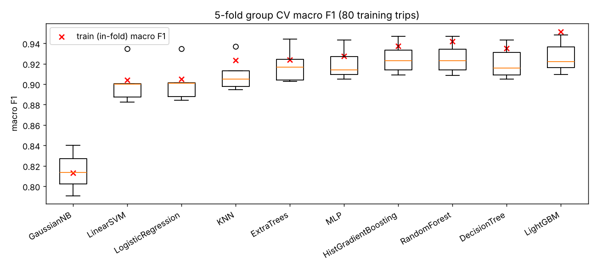
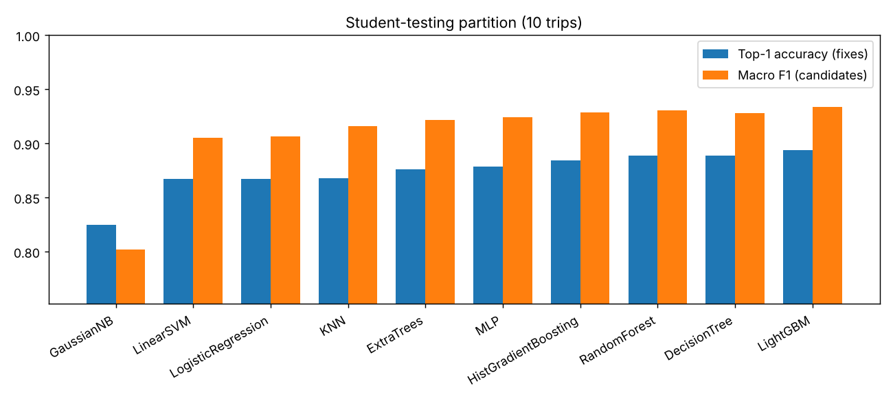
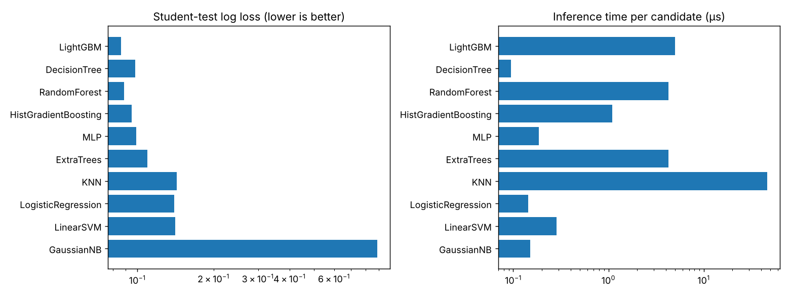
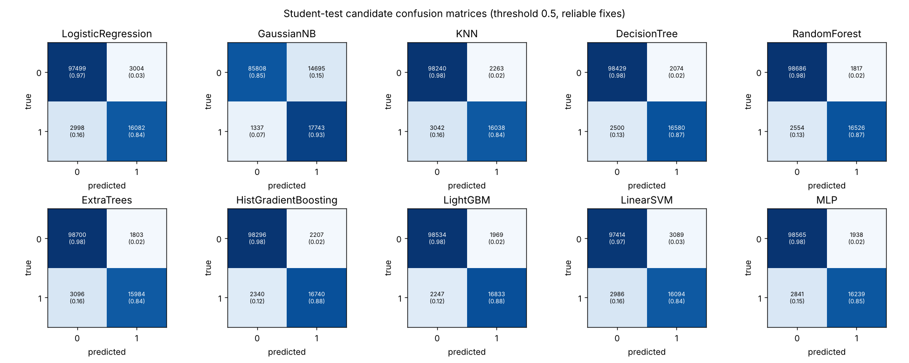
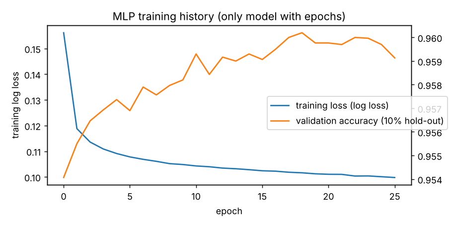
We selected LightGBM using the cross-validation Top-1 accuracy on the training trips (88.04%, against 87.95% for the runner-up HistGradientBoosting). The student-testing trips confirmed this choice but did not drive it. The other selection criteria also point the same way:
The linear and Naive Bayes models are clearly weaker, which confirms that the feature interactions matter. KNN and the MLP are competitive but slower and were trained on subsamples. The tree ensembles are close, but slower or larger.
n_estimators = 650learning_rate = 0.0117num_leaves = 214min_child_samples = 257subsample = 0.8987colsample_bytree = 0.8811reg_lambda = 5.295reg_alpha = 0.1694| variant | cv_macro_f1 | cv_top1 | st_top1_acc | st_macro_f1 | st_log_loss | st_route_continuity | train_time_s | inference_time_s | inference_us_per_candidate |
|---|---|---|---|---|---|---|---|---|---|
| untuned | 0.9281 | 0.8844 | 0.8935 | 0.9339 | 0.0861 | 0.9845 | 11.3359 | 0.6140 | 5.1310 |
| tuned | 0.9288 | 0.8860 | 0.8974 | 0.9368 | 0.0845 | 0.9859 | 29.1203 | 3.4119 | 28.5124 |
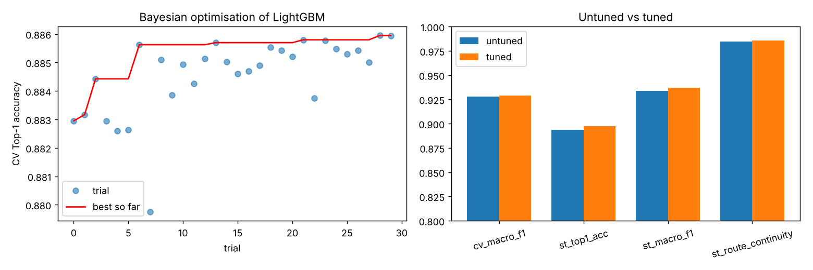
| method | top1_acc | mean_trip_top1 | route_continuity | breaks_per_trip | route_f1 | lcs_ratio |
|---|---|---|---|---|---|---|
| Classifier only (arg-max) | 0.8974 | 0.9085 | 0.9859 | 29.1 | 0.9419 | 0.8901 |
| Classifier + HMM/Viterbi | 0.9343 | 0.9409 | 0.9993 | 1.2 | 0.9737 | 0.9026 |
Student-testing partition, final LightGBM model. Top-1 accuracy is pooled over all reliable fixes, and the other columns are means over trips.
| trip_id | n_fixes | clf_top1 | hmm_top1 | clf_continuity | hmm_continuity | clf_breaks | hmm_breaks | clf_route_f1 | hmm_route_f1 |
|---|---|---|---|---|---|---|---|---|---|
| 00000000 | 2503 | 0.9505 | 0.9600 | 0.9912 | 0.9992 | 22 | 2 | 0.9810 | 0.9945 |
| 00000007 | 1354 | 0.9446 | 0.9490 | 0.9993 | 1.0000 | 1 | 0 | 0.9872 | 0.9872 |
| 00000009 | 1049 | 0.8837 | 0.9161 | 0.9876 | 0.9981 | 13 | 2 | 0.9134 | 0.9433 |
| 00000040 | 2995 | 0.9386 | 0.9432 | 0.9943 | 1.0000 | 17 | 0 | 0.9752 | 0.9966 |
| 00000052 | 262 | 0.9695 | 1.0000 | 0.9808 | 1.0000 | 5 | 0 | 0.9524 | 0.9905 |
| 00000056 | 3958 | 0.9214 | 0.9669 | 0.9664 | 0.9990 | 133 | 4 | 0.9312 | 0.9721 |
| 00000065 | 768 | 0.8841 | 0.9023 | 0.9857 | 0.9974 | 11 | 2 | 0.9243 | 0.9386 |
| 00000076 | 1486 | 0.9179 | 0.9670 | 0.9805 | 0.9993 | 29 | 1 | 0.9303 | 0.9736 |
| 00000077 | 3911 | 0.7870 | 0.8668 | 0.9880 | 0.9997 | 47 | 1 | 0.8721 | 0.9678 |
| 00000091 | 874 | 0.8879 | 0.9371 | 0.9851 | 1.0000 | 13 | 0 | 0.9514 | 0.9729 |
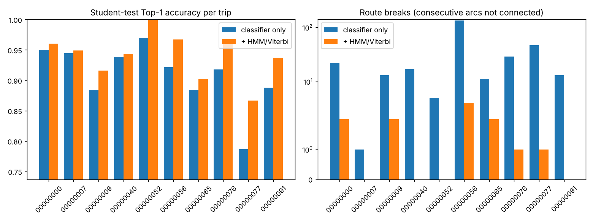
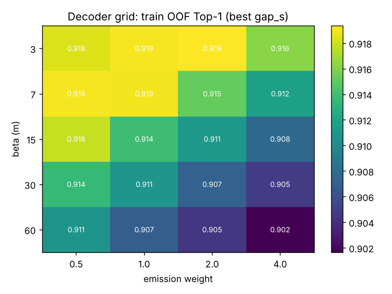
Did HMM decoding improve the route? Yes. Pooled Top-1 rose from 89.74% to 93.43%, and it improved on 10 of 10 trips. The largest gain is in continuity: isolated wrong snaps to a crossing street or the opposite carriageway cannot be reached from their neighbours at a plausible distance, so Viterbi replaces them. Route F1 and the order-aware LCS ratio rise as well.
Where it did not help: the remaining errors are mostly long runs on a parallel road, where the classifier and the HMM agree on the wrong but connected alternative, and fixes right at junctions where the label itself is ambiguous.
Maps are generated with Folium by src/pathsnap/viz.py. Each map has the following layers, each of which can be toggled:
The view is fitted to the trajectory's bounding box. Each map is saved as interactive HTML. The screenshots below come from those files.
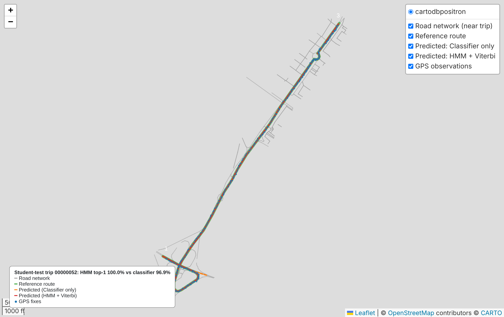
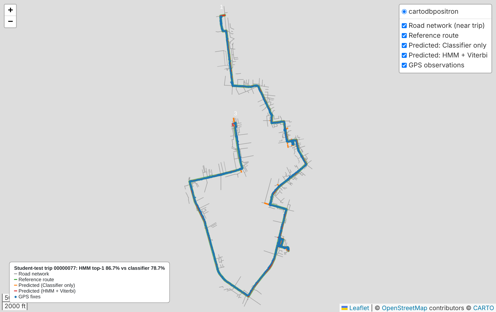
Interactive maps for all 10 student-test trips and the EDA trips are in results/maps/. They are generated by scripts/05_hmm.py and scripts/01_eda.py using src/pathsnap/viz.py.
uvicorn api.main:app --host 0.0.0.0 --port 8000 loads the final model, the feature configuration and the HMM
parameters (artifacts/pipeline_config.json, artifacts/hmm_config.json). GET /trips lists the evaluation trips found in
data/raw/eval_test. POST /predict {"trip_id"} runs the whole pipeline: load raw files without the route,
clean, generate candidates and features, classify, run Viterbi. Only after prediction does it read the reference route to compute
accuracy server-side. The response contains the GPS fixes, the predicted polylines, one arc id per raw observation and metrics, never the
reference route. Every request is logged with timings and accuracy to the console and to logs/api.log.ui/index.html, Leaflet bundled locally) served with python -m http.server.
The evaluator enters the API address, loads the ten trips, selects one, and sees the predicted route over the GPS fixes with Top-1
accuracy, classifier-only accuracy, continuity, breaks, route F1 and processing time.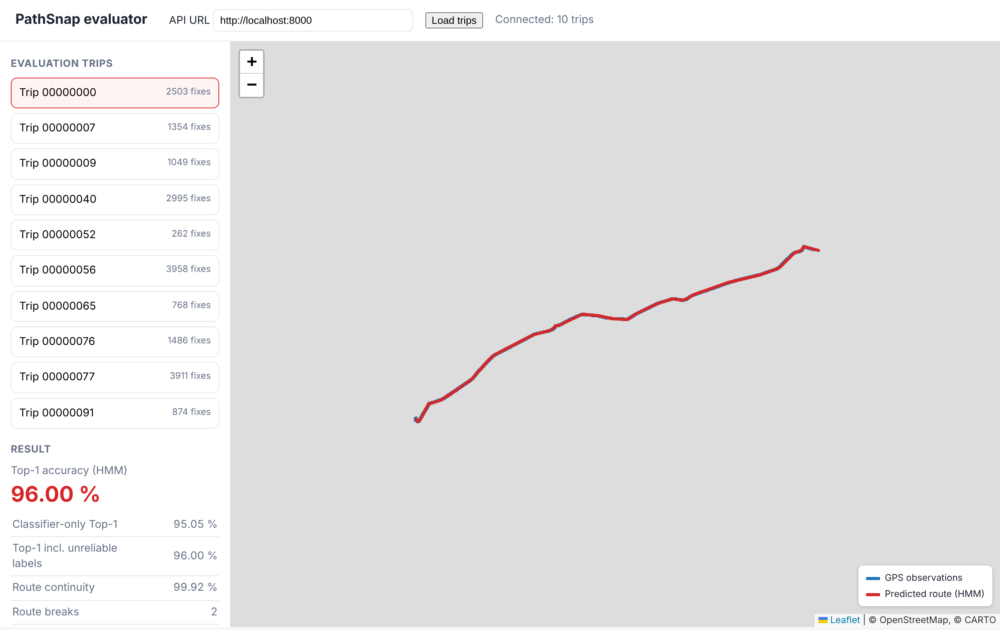
2026-11-18 07:10:55,455 | INFO | Loaded model models/final_LightGBM_tuned.joblib | HMM params {'beta': 3.0, 'w_emission': 2.0, 'gap_s': 30.0, 'unreachable_logp': -50.0, 'p_floor': 0.0001} | trips dir data/raw/student_test
INFO: Started server process [5619]
INFO: Waiting for application startup.
INFO: Application startup complete.
INFO: Uvicorn running on http://0.0.0.0:8000 (Press CTRL+C to quit)
2026-11-18 07:11:02,147 | INFO | GET /trips -> 10 trips
INFO: 127.0.0.1:46848 - "GET /trips HTTP/1.1" 200 OK
2026-11-18 07:11:02,157 | INFO | POST /predict trip=00000000 : running full pipeline
2026-11-18 07:11:03,133 | INFO | trip=00000000 fixes=2503 candidates=10530 time=0.85s {'preprocess_candidates_s': 0.26, 'classifier_s': 0.34, 'hmm_viterbi_s': 0.19} | HMM top-1=0.9600 classifier top-1=0.9505
INFO: 127.0.0.1:46856 - "POST /predict HTTP/1.1" 200 OK
2026-11-18 07:11:03,161 | INFO | POST /predict trip=00000077 : running full pipeline
2026-11-18 07:11:05,083 | INFO | trip=00000077 fixes=3911 candidates=28443 time=1.74s {'preprocess_candidates_s': 0.26, 'classifier_s': 1.0, 'hmm_viterbi_s': 0.44} | HMM top-1=0.8668 classifier top-1=0.7870
INFO: 127.0.0.1:46864 - "POST /predict HTTP/1.1" 200 OK
2026-11-18 07:11:05,140 | INFO | POST /predict trip=00000091 : running full pipeline
2026-11-18 07:11:05,840 | INFO | trip=00000091 fixes=874 candidates=6427 time=0.62s {'preprocess_candidates_s': 0.13, 'classifier_s': 0.2, 'hmm_viterbi_s': 0.26} | HMM top-1=0.9371 classifier top-1=0.8879
INFO: 127.0.0.1:46878 - "POST /predict HTTP/1.1" 200 OK
Rehearsal log from uvicorn api.main:app. Replace with the screenshot of the receiving laptop's terminal taken during the evaluation.
We used an AI assistant to help write code and to draft parts of this report. All experiments were executed on the provided data with the code in our repository. Every number, table, plot and map is produced by those scripts and can be regenerated with the commands in the README. The team has reviewed the implementation and results and can explain the design decisions.